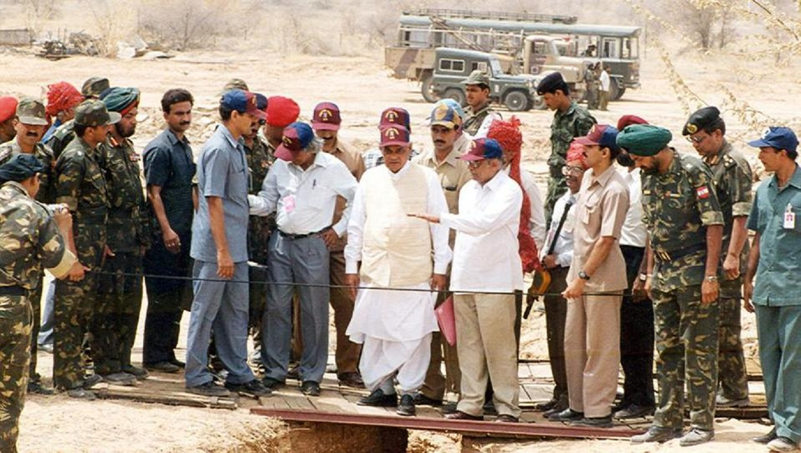

Career after Student
After graduating from the Madras Institute of Technology in 1960,
Kalam joined the Aeronautical Development Establishment of the Defence
Research and Development Organisation (by Press Information Bureau, Government of India)
as a scientist after becoming a member of the Defence Research & Development Service (DRDS).
He started his career by designing a small hovercraft, but remained unconvinced by his choice
of a job at DRDO.[26] Kalam was also part of the INCOSPAR committee working under Vikram Sarabhai,
the renowned space scientist.[13] In 1969, Kalam was transferred to the Indian Space Research
Organisation (ISRO) where he was the project director of India's first Satellite Launch
Vehicle (SLV-III) which successfully deployed the Rohini satellite in near-earth orbit in July 1980;
Kalam had first started work on an expandable rocket project independently at DRDO in 1965.[1] In 1969,
Kalam received the government's approval and expanded the programme to include more engineers.[25]
Kalam addresses engineering students at IIT Guwahati
Career as Scientist
In 1963 to 1964, he visited NASA's Langley Research Center in Hampton, Virginia;
Goddard Space Flight Center in Greenbelt, Maryland; and Wallops Flight Facility.[11][27]
Between the 1970s and 1990s, Kalam made an effort to develop the Polar Satellite Launch
Vehicle (PSLV) and SLV-III projects, both of which proved to be successful.
Kalam was invited by Raja Ramanna to witness the country's first nuclear test Smiling
Buddha as the representative of TBRL, even though he had not participated in its development.
In the 1970s, Kalam also directed two projects, Project Devil and Project Valiant,
which sought to develop ballistic missiles from the technology of the successful SLV
programme.[28] Despite the disapproval of the Union Cabinet, Prime Minister Indira
Gandhi allotted secret funds for these aerospace projects through her discretionary
powers under Kalam's directorship.[28] Kalam played an integral role convincing the
Union Cabinet to conceal the true nature of these classified aerospace projects.[28]
His research and educational leadership brought him great laurels and prestige in the 1980s,
which prompted the government to initiate an advanced missile programme under his directorship.
[28] Kalam and Dr V S Arunachalam, metallurgist and scientific adviser to the Defence Minister,
worked on the suggestion by the then Defence Minister, R. Venkataraman on a proposal for
simultaneous development of a quiver of missiles instead of taking planned missiles one after
another.[29] R Venkatraman was instrumental in getting the cabinet approval for allocating ₹ 3.88
billion for the mission, named Integrated Guided Missile Development Programme (IGMDP) and appointed
kalam as the chief executive.[29] Kalam played a major part in developing many missiles under the
mission including Agni, an intermediate range ballistic missile and Prithvi, the tactical
surface-to-surface missile, although the projects have been criticised for mismanagement
and cost and time overruns.[29][30]
Starting of Political Career

Kalam served as the Chief Scientific Adviser to the Prime Minister and Secretary of the Defence
Research and Development Organisation from July 1992 to December 1999. The Pokhran-II nuclear tests
were conducted during this period in which he played an intensive political and technological role.
Kalam served as the Chief Project Coordinator, along with Rajagopala Chidambaram, during the testing
phase. Media coverage of Kalam during this period made him the country's best known nuclear scientist.
However, the director of the site test, K Santhanam, said that the thermonuclear bomb had been a
"fizzle" and criticised Kalam for issuing an incorrect report. Both Kalam and Chidambaram dismissed
the claims.
Career as President Of India
Kalam served as the 11th President of India, succeeding K. R. Narayanan.
He won the 2002 presidential election with an electoral vote of 922,884,
surpassing the 107,366 votes won by Lakshmi Sahgal. His term lasted
from 25 July 2002 to 25 July 2007.[38]
On 10 June 2002, the National Democratic Alliance (NDA) which was in power at the time,
expressed that they would nominate Kalam for the post of President, and both the Samajwadi
Party and the Nationalist Congress Party backed his candidacy. After the Samajwadi Party
announced its support for Kalam, Narayanan chose not to seek a second term in office,
leaving the field clear. Kalam said of the announcement of his candidature:
I am really overwhelmed. Everywhere both in Internet and in other media,
I have been asked for a message. I was thinking what message I can give
to the people of the country at this juncture.
On 18 June, Kalam filed his nomination papers in the Indian Parliament,
accompanied by Vajpayee and his senior Cabinet colleagues.